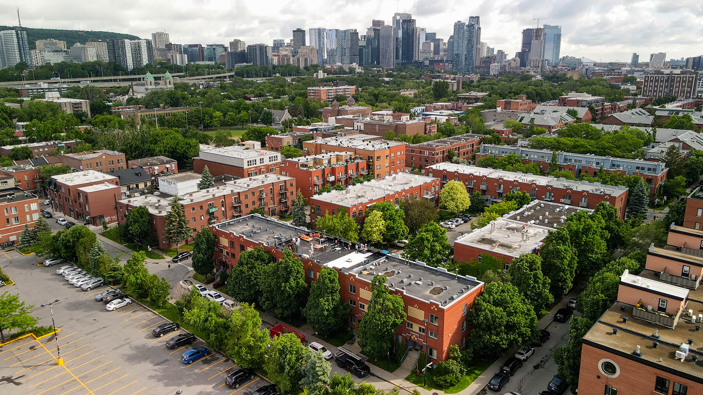

Montréal est la capitale du toit plat au Canada. Toitex possède l'expertise spécifique que le patrimoine bâti montréalais exige : membrane élastomère, TPO, réparations de corniche, solins complexes. Montréal is Canada's flat roof capital. Toitex has the specific expertise that Montréal's built heritage demands: elastomeric membrane, TPO, cornice repairs, complex flashing.

Le parc immobilier montréalais est unique au Canada. Plex, cottages, immeubles commerciaux centenaires — chaque type de bâtiment exige une approche spécifique que nos couvreurs maîtrisent parfaitement. Montréal's building stock is unique in Canada. Plexes, cottages, century-old commercial buildings — each building type demands a specific approach our roofers master perfectly.
Montréal détient une particularité architecturale rare en Amérique du Nord : plus de 80 % de ses bâtiments résidentiels possèdent un toit plat. Ce choix historique, hérité de l'urbanisme dense du XIXe siècle, crée des exigences techniques que seuls les couvreurs expérimentés sur ce type de toiture peuvent satisfaire. Le toit plat montréalais n'est pas simplement une surface horizontale — c'est un système complexe incluant la membrane d'étanchéité, les drains, les parapets, les solins de rive, la ventilation et l'isolation, tous devant fonctionner en harmonie pour résister aux quatre saisons du Québec. Montréal holds an architectural distinction rare in North America: over 80% of its residential buildings have flat roof. This historic choice, inherited from dense 19th-century urbanism, creates technical demands that only roofers experienced with this roof type can meet. The Montréal flat roof isn't simply a horizontal surface — it's a complex system including the waterproof membrane, drains, parapets, edge flashing, ventilation, and insulation, all needing to work in harmony to withstand Quebec's four seasons.
Chez Toitex, nous avons développé une spécialisation approfondie dans la toiture montréalaise. Nos couvreurs comprennent les subtilités des duplex et triplex du Plateau-Mont-Royal, où l'accès au toit se fait souvent par des escaliers extérieurs étroits et où les murs mitoyens exigent des solins impeccables. Ils maîtrisent les défis des immeubles centenaires de Rosemont et Villeray, dont les structures en bois requièrent une attention particulière à la ventilation pour prévenir la pourriture. Ils savent naviguer les exigences patrimoniales des bâtiments du Vieux-Montréal et de la rue Saint-Denis. At Toitex, we've developed deep specialization in Montréal roofing. Our roofers understand the subtleties of Plateau-Mont-Royal duplexes and triplexes, where roof access is often through narrow exterior staircases and where party walls demand impeccable flashing. They master the challenges of century-old Rosemont and Villeray buildings, whose wood structures require particular attention to ventilation to prevent rot. They know how to navigate the heritage requirements of Old Montréal and Rue Saint-Denis buildings.
L'hiver montréalais est l'ennemi numéro un des toitures. Avec des températures descendant régulièrement sous les -20 °C, les membranes subissent des contractions thermiques considérables. Les accumulations de neige sur les toit plat créent des charges pouvant atteindre 50 livres par pied carré, tandis que les redoux de janvier provoquent des infiltrations là où les joints et solins ont perdu leur étanchéité. Notre service d'urgence 24/7 répond à ces situations critiques dans tous les arrondissements de Montréal. Montréal's winter is roofing's number one enemy. With temperatures regularly dropping below -20°C, membranes undergo considerable thermal contraction. Snow accumulation on flat roof creates loads that can reach 50 pounds per square foot, while January thaws cause infiltration where joints and flashing have lost their seal. Our 24/7 emergency service responds to these critical situations in every Montréal borough.
Le paysage urbain de Montréal est défini par ses toit plat caractéristiques, ses escaliers extérieurs en colimaçon et ses parapets ornementés. Cette architecture distincte exige des interventions de toiture qui vont bien au-delà de la simple pose de matériaux. Un couvreur à Montréal doit comprendre la structure des bâtiments centenaires, les contraintes d'accès dans les ruelles étroites, et les normes patrimoniales qui régissent certains quartiers. Montréal's urban landscape is defined by its characteristic flat roof, exterior spiral staircases, and ornamental parapets. This distinct architecture demands roofing work that goes well beyond simply laying materials. A roofer in Montréal must understand century-old building structures, access constraints in narrow alleyways, and heritage standards governing certain neighborhoods.
Le Plateau-Mont-Royal et Rosemont–La Petite-Patrie concentrent la plus grande densité de plex au Québec. Ces duplex, triplex et quadruplex construits entre 1900 et 1950 partagent des caractéristiques communes : toit plat avec légère pente vers l'arrière, murs mitoyens en brique nécessitant des solins de rive soignés, et drains intérieurs à déboucher régulièrement. Toitex réalise des dizaines de réfections annuellement dans ces arrondissements, en portant une attention particulière au drainage, car l'accumulation d'eau stagnante constitue la première cause de détérioration prématurée des membranes sur les plex montréalais. Le Plateau-Mont-Royal and Rosemont–La Petite-Patrie house the highest density of plexes in Quebec. These duplexes, triplexes, and quadruplexes built between 1900 and 1950 share common features: flat roof with a slight slope toward the rear, shared brick walls requiring careful edge flashing, and interior drains needing regular clearing. Toitex completes dozens of re-roofing jobs annually in these boroughs, paying particular attention to drainage, as standing water accumulation is the leading cause of premature membrane deterioration on Montréal plexes.
Ahuntsic-Cartierville, Montréal-Nord et Saint-Léonard présentent un parc immobilier plus récent que le centre-ville, avec un mélange de bungalows des années 1960, d'immeubles à appartements et de maisons de ville contemporaines. Les bungalows de ces secteurs, avec leurs toitures en pente à faible inclinaison, sont particulièrement vulnérables aux barrages de glace en hiver. Toitex recommande fréquemment un double traitement : remplacement des bardeaux vieillissants combiné à l'installation d'une membrane d'étanchéité sous la première rangée de bardeaux et autour des vallées, offrant une protection supplémentaire contre les remontées d'eau causées par la glace. Ahuntsic-Cartierville, Montréal-Nord, and Saint-Léonard feature a newer building stock than downtown, with a mix of 1960s bungalows, apartment buildings, and contemporary townhouses. Bungalows in these areas, with their low-slope roofs, are particularly vulnerable to ice dams in winter. Toitex frequently recommends a dual approach: replacing aging shingles combined with installing a waterproof membrane under the first row of shingles and around valleys, providing additional protection against water backup caused by ice.
Les arrondissements du sud de Montréal, notamment Verdun, LaSalle et Le Sud-Ouest, traversent une transformation immobilière majeure. La conversion de bâtiments industriels en lofts résidentiels et l'arrivée de nouvelles constructions à haute densité génèrent des besoins de toiture variés. Verdun, en particulier, combine des plex ouvriers centenaires nécessitant des réfections délicates avec des projets neufs exigeant des systèmes de toiture verte ou des membranes blanches réfléchissantes. Toitex répond à cette diversité avec une équipe capable de passer d'un chantier patrimonial à une installation contemporaine sans compromettre la qualité de l'un ou de l'autre. Montréal's southern boroughs, particularly Verdun, LaSalle, and Le Sud-Ouest, are undergoing a major real estate transformation. Converting industrial buildings to residential lofts and new high-density construction generate varied roofing needs. Verdun especially combines century-old worker plexes requiring delicate re-roofing with new projects demanding green roof systems or reflective white membranes. Toitex meets this diversity with a team capable of moving from a heritage project to a contemporary installation without compromising the quality of either.
La majorité de notre travail à Montréal concerne les toit plat. Membrane élastomère, TPO, EPDM — nous maîtrisons tous les systèmes et recommandons celui qui convient réellement à votre bâtiment, pas celui qui nous rapporte le plus.Most of our Montréal work involves flat roof. Elastomeric membrane, TPO, EPDM — we master all systems and recommend the one that truly suits your building, not the one that profits us most.
Les plex montréalais ont des particularités que les couvreurs de banlieue ne comprennent pas toujours : murs mitoyens, drains intérieurs, corniche ornementales, accès par ruelle. Nos équipes gèrent ces défis quotidiennement.Montréal plexes have characteristics that suburban roofers don't always understand: party walls, interior drains, ornamental cornices, alley access. Our teams handle these challenges daily.
Depuis notre base de Boisbriand, nous accédons à Ahuntsic en 20 minutes, au Plateau en 30 minutes, à Verdun en 35 minutes. Notre service d'urgence 24/7 couvre tous les arrondissements de Montréal sans exception.From our Boisbriand base, we reach Ahuntsic in 20 minutes, the Plateau in 30 minutes, Verdun in 35 minutes. Our 24/7 emergency service covers every Montréal borough without exception.
Licence RBQ 5824-2371-01, assurance responsabilité de 2 millions, conformité CNESST. À Montréal, où les règlements sont stricts et les inspections fréquentes, travailler avec un couvreur licencié n'est pas optionnel — c'est essentiel.RBQ license 5824-2371-01, $2 million liability insurance, CNESST compliance. In Montréal, where regulations are strict and inspections frequent, working with a licensed roofer isn't optional — it's essential.
« Réfection complète de la membrane élastomère sur notre triplex du Plateau. Les gars ont tout fait en deux jours malgré l'accès difficile par la ruelle. Aucune infiltration depuis, même après les grosses pluies d'automne. Travail de pro. » "Complete elastomeric membrane replacement on our Plateau triplex. The guys did everything in two days despite difficult alley access. No leaks since, even after heavy autumn rains. Professional work."
Yannick S. Plateau-Mont-Royal« Infiltration d'eau un samedi soir dans notre condo de Villeray. Toitex a envoyé quelqu'un en moins de 90 minutes. Le bâchage a tenu tout l'hiver et la réparation permanente a été faite au printemps. Service irréprochable dans l'urgence. » "Water leak on a Saturday night in our Villeray condo. Toitex sent someone within 90 minutes. The tarping held all winter and the permanent repair was done in spring. Flawless emergency service."
Mélissa C. Villeray« Propriétaire d'un immeuble de 8 logements à Verdun. Toitex a refait le toit plat complet avec une membrane élastomère de qualité commerciale. Le prix était compétitif et le travail exemplaire. Mes locataires sont ravis de ne plus avoir de problèmes d'humidité. » "Owner of an 8-unit building in Verdun. Toitex redid the entire flat roof with commercial-grade elastomeric membrane. The price was competitive and the work exemplary. My tenants are thrilled to no longer have humidity problems."
André G. Verdun« Inspection pré-achat de notre duplex dans Rosemont. Le rapport de Toitex était tellement détaillé que notre courtier en était impressionné. On a négocié 12 000 $ de rabais grâce à leurs constats. Quelques mois plus tard, ils ont fait les travaux. Cercle complet. » "Pre-purchase inspection of our Rosemont duplex. Toitex's report was so detailed our broker was impressed. We negotiated $12,000 off thanks to their findings. A few months later, they did the work. Full circle."
Julie et Patrick H. Rosemont–La Petite-Patrie